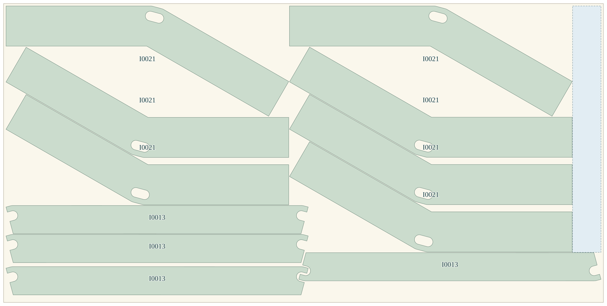
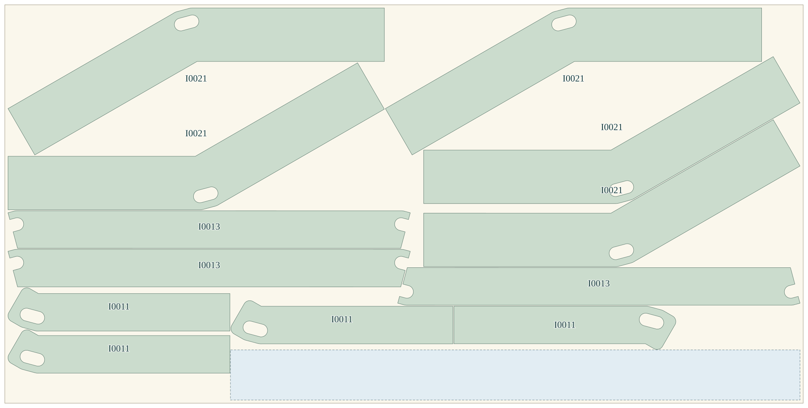
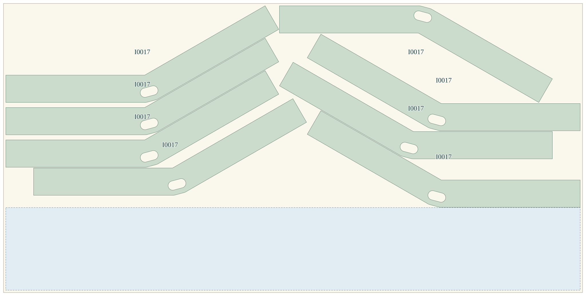
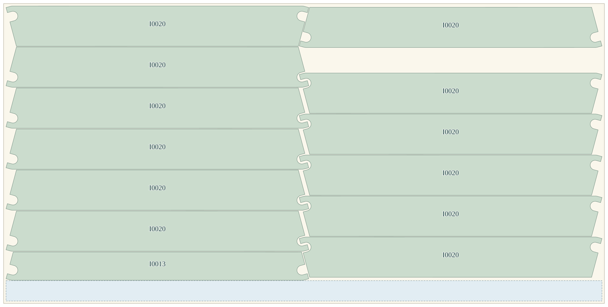
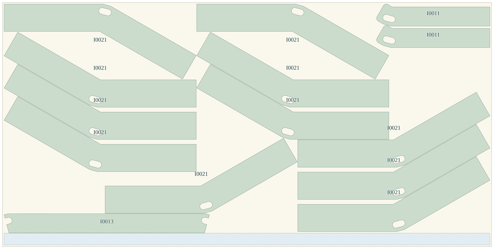
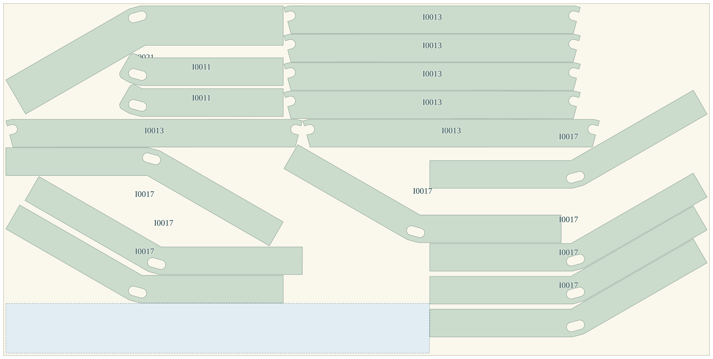
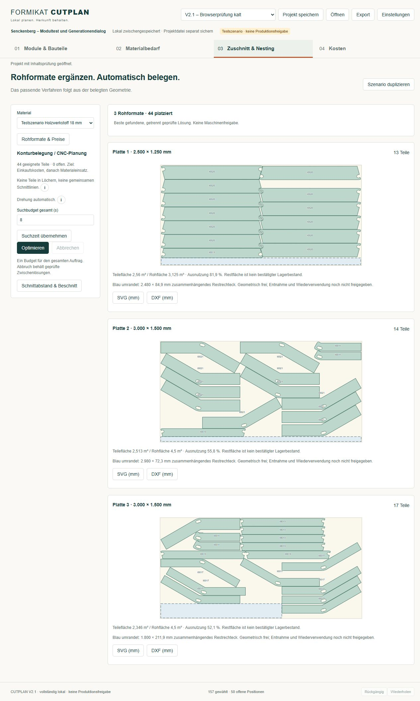
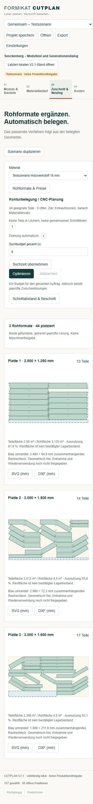

Vier gleiche kleine Platten
12,500 m² · 475,00 Test-Euro




Wirtschaftlichere Rohformatwahl, ohne neuen Solver und ohne weitere Eingabemenüs. Die zuvor nur gezielt nachgewiesene Mischbelegung wird jetzt automatisch gefunden.
Anwendung starten: im entpackten Versionsordner START_CUTPLAN.cmd doppelklicken und das Projekt bei Bedarf öffnen. Dieser Vergleich selbst benötigt keinen Server und keine Internetverbindung.
| 44 Ringsegmente | Bisherige V2 | Neue V2.1 |
|---|---|---|
| Vollständig und unabhängig gültig | 44 von 44 | 44 von 44 |
| Tatsächlich verwendete Rohformate | 4 × 2500 × 1250 mm | 1 × 2500 × 1250 mm 2 × 3000 × 1500 mm |
| Gekaufte Rohfläche | 12,500 m² | 12,125 m² |
| Material-Testkosten, netto | 475,00 € | 460,75 € |
| Größtes nachgewiesenes freies Rechteck | 0,886 m² | 0,381 m² |
0,375 m² und 14,25 Test-Euro weniger Einkauf. Die geringere Plattenzahl allein ist kein Einsparmaß: drei statt vier Platten bedeutet hier nicht 25 % weniger Material.
Die Eingaben blieben gleich: Original-Profilpolylinien mit ihren Innenlöchern, 44 Teile, 3 mm Werkzeugabstand, 10 mm Rand, 0,025 mm deklarierte Konturabweichung, Winkel 0/90/180/270°, keine Spiegelung, keine Teile in Löchern und keine gemeinsamen Schnittlinien. Preisannahme: 38 €/m² netto; kein bestätigter Lieferantenpreis.
Die Mischbelegung spart Rohfläche und Testkosten, liefert aber kein größeres zusammenhängendes Restrechteck. Der bisherige Vier-Platten-Plan hat hier den besseren Nachweis. Bei denselben Platten verbessert bloßes Zusammenrücken nicht die globale Flächenausnutzung; es kann nur die Restgeometrie verbessern.
Die Rechtecke sind konservativ geometrisch freie Bereiche, kein bestätigter Lagerbestand, keine vollständige Bewertung aller Konturreste und kein freigegebener Entnahmeschnitt. Ein zukünftiger Restwert wurde nicht gutgeschrieben.
12,500 m² · 475,00 Test-Euro



12,125 m² · 460,75 Test-Euro



Bilder zeigen die tatsächlich geprüften Pläne und Positionsbezüge. Sie werden auf Spaltenbreite skaliert; kleine und große Rohplatten haben deshalb hier nicht denselben Bildschirmmaßstab.
| Kontrolllauf | Tatsächliches Ergebnis | Einordnung |
|---|---|---|
| Ringe · 2 s · Seeds 42 und 73 | Je 44/44 gültig, aber 7 kleine Platten, 21,875 m² | Schneller vollständiger Sicherheitsplan; noch kein wirtschaftlich guter Plan. V2 platzierte im damaligen Kaltstart nur 28/44. |
| Ringe · 8 s und 20 s · Seeds 42 und 73 | Viermal automatisch 1 kleine + 2 große Platten; 44/44, 12,125 m², 460,75 Test-Euro | Gleiche Teile und Fertigungsregeln; längere Suche brachte hier keinen weiteren Vorteil. |
| Gesamtes Senckenberg-Testprojekt | 107 geeignete Teile vollständig; erster vollständiger Startstand nach 223 ms; Solver-Wanduhrzeit 8,165 s bei 8 s Budget | Gemessener lokaler Node-Lauf. Gesamter Release-Ablauf einschließlich PDF, Export und zusätzlichen Prüfungen: 9,598 s. |
| Rundstab und Säge | 29 D30-Teile auf 14 Stäben; Rechteckreferenz 50 Test-Euro; reale vier Rechtecke 126 Test-Euro; endlicher Bestandsfall 30 Test-Euro | Unabhängige Mengen-, Abstand-, Bestands- beziehungsweise Schnittbaumprüfung bestanden. |
| Verträge und Abbruch | 6 Vertrags-, 9 kurze, 3 lineare und 9 Ring-Prüfgruppen bestanden | Enthält wiederholte Unverändertheitsprüfungen, keine Summe unabhängiger Erfolgsquoten. Solver-Abbruch bewahrt einen vollständigen gültigen Incumbent. |
Im lokalen Windows-Browser wurde ein kalter vollständiger Lauf mit 107 geeigneten Teilen und drei gemischten Ringplatten bestätigt. Download und erneutes Öffnen bestanden einschließlich SHA-Inhaltsprüfung. Ein manueller Browser-Abbruch eines 20-s-Laufs behielt 44/44 Ringteile auf drei Rohformaten. Der Projektausdruck hat 9 Seiten; alle Seiten wurden gerendert und visuell geprüft. Auch der V2-Ausdruck hat 9 Seiten: keine Seitenreduktion in V2.1.
Tatsächlich geprüft: 1280 × 900 und 375 × 812 Pixel. In der schmalen Ansicht blieb die Dokumentbreite mit 360 Pixeln innerhalb des Fensters. Das ist kein Safari- oder iPad-Test.


1.472,25 € netto sind nur die bekannte Material-Testzwischensumme des Gesamtprojekts. Von 157 gewählten CAD-Vorkommen bleiben 50 Positionen mit offenen Grundlagen sichtbar; die 107 geeigneten sind vollständig platziert. Eine vollständige Projektsumme bleibt ausdrücklich offen.
Kein Globaloptimalitätsbeweis. Die Formatvorschläge sind eine begrenzte Ein-/Zwei-Format-Suche, keine erschöpfende Beschaffungsoptimierung. Zwei Bestandsvergaben decken nicht jede denkbare Allokation ab. Keine freie kontinuierliche Drehung, kein neuer Geometriekern, kein Qwen, keine Cloud-Laufzeit und keine Maschinen- oder Bestellfreigabe.
Alle 1.825 Quellvorkommen behalten ihre Zuordnung. Vorversionen und gespeicherte Quellgeometrie sind unverändert; es wurden keine neuen Original-CAD-Dateien geöffnet oder hochgeladen. Offline-Prüfung des vollständigen lokalen Ablaufs: externe Socket- und Fetch-Verbindungen gesperrt, keine unerwarteten Laufzeit-Netzaufrufe. Der Browser lädt lokal gebündelte Assets unter einer auf eigene Quellen begrenzten Sicherheitsregel. Clipper und HiGHS bleiben lokal gebündelt.
CUTPLAN V2.1 · Engine CUTPLAN-V2.1-2.1.0 · Lokaler Entwicklungs- und Teststand. Die Anwendungsversion ist keine erneute Verifikation einer CAD-Intelligence-Version. Dieser Bericht enthält abgeleitete Zeichnungen und Ergebnisse, keine Rhino-Originale.